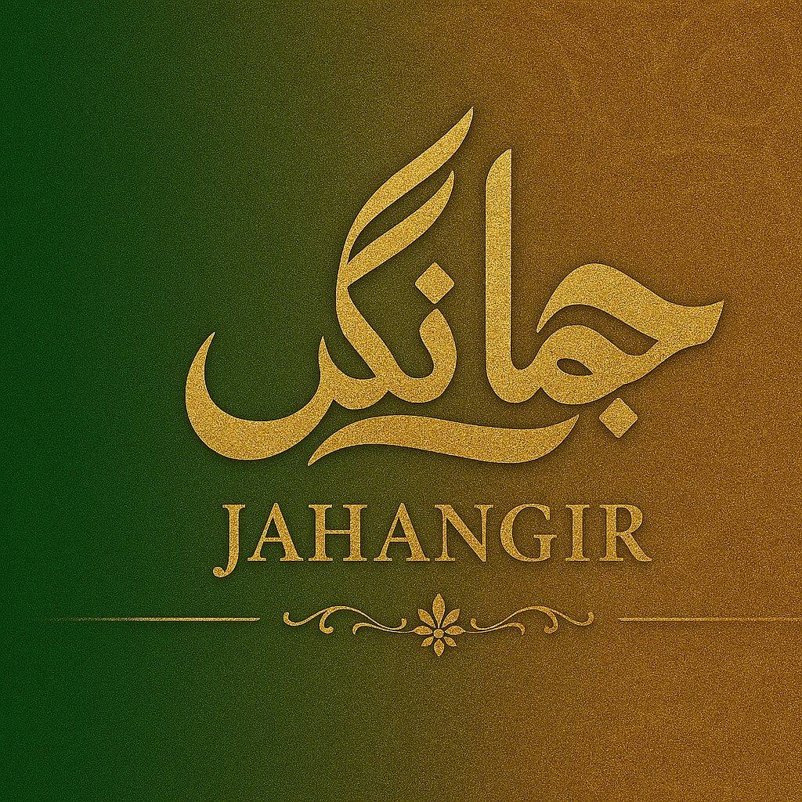

This platform serves as the definitive digital archive and strategic blueprint of the Muslim Emperors, meticulously detailing the fusion of spiritual mandate and geopolitical mastery that defined their reigns. We explore the sophisticated grand strategies—from the "Intellectual Jihad" that sparked Golden Ages to the revolutionary economic models of ethical trade—that allowed these leaders to govern diverse populations with justice and resilience. By analyzing the profound Islamic influence on their administrative, military, and environmental policies, this site offers an immersive look into how faith-driven leadership transformed a unified worldview into one of history’s most enduring and influential imperial legacies.
Get in touch with us at jahangirpial@outlook.com